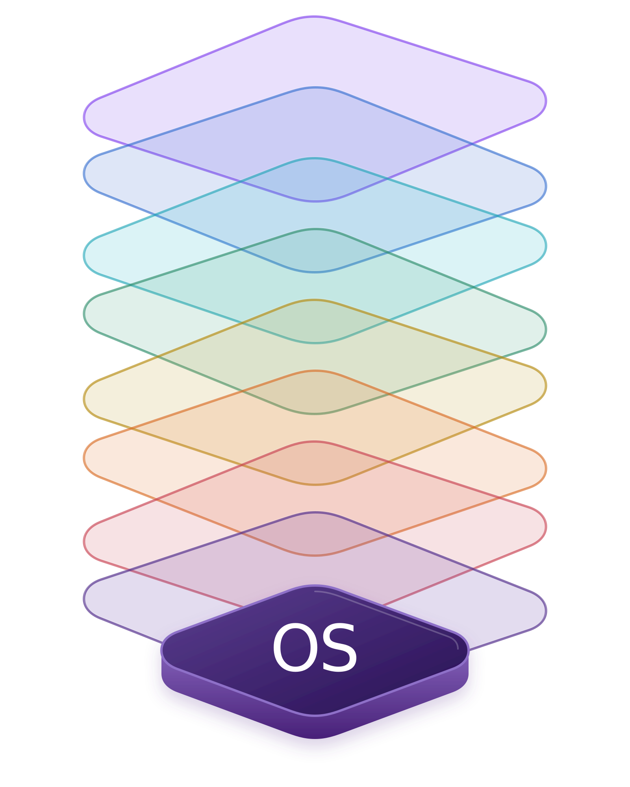
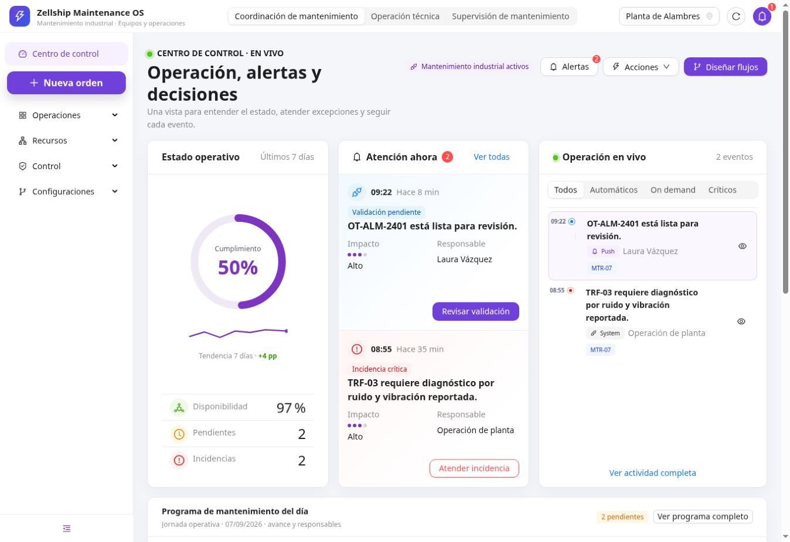
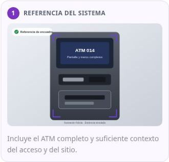
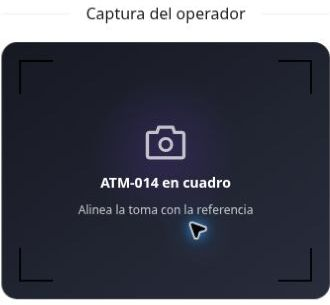
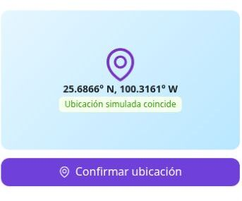
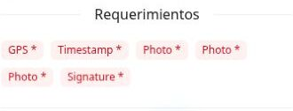

01WhatsAppAtención inmediata
Zellship OperacionesCuenta de empresa
HOY
Plantilla Utility propuesta · Ejemplo conceptual · Datos simulados

ZELLSHIP BUSINESS OS · OPERATION EXECUTION ENGINE
OEE lleva contexto, protocolo y autoridad al lugar donde ocurre el trabajo. Simple para quien opera. Robusto para la organización.
INTENCIÓN OPERATIVA · EJECUCIÓN GUIADA · RESULTADO VERIFICABLE

BUSINESS OS
CONTEXTO · OPERACIÓN · EVOLUCIÓNRECORRIDO DEMOSTRATIVO
Las pantallas de ATM, Alambres y Retail muestran cómo la ejecución puede conservar activo, ubicación, protocolo, responsable, evidencia y decisión dentro del mismo caso.
ALAMBRES · DEMO
PREGUNTA OPERATIVAUna lectura compartida de activos, alertas, trabajo en curso y responsables permite dirigir la operación sin reconstruir el contexto.

Evidencia utilizada Pantallas reales de las demos Zellship ATM, Alambres y Retail. No representan una implementación productiva para el partner.
ALERTAS Y DESVIACIONES · CANALES PROPUESTOS
Una desviación activa un aviso general y dirige al usuario al detalle autenticado. El contexto operativo permanece gobernado dentro del caso; el canal abre la puerta correcta.
Plantilla Utility propuesta · Ejemplo conceptual · Datos simulados
El propósito no es enviar más mensajes. Es convertir una desviación o una solicitud de validación en una intervención oportuna, utilizando el mismo contexto que gobierna la ejecución.
WhatsApp y correo son representaciones propuestas. La aprobación y categoría final de cada plantilla, así como reglas, consentimiento, destinatarios, costos e integración, se definen dentro del alcance del proyecto y dependen de las políticas vigentes del canal.
EVIDENCIA LIGADA AL PROTOCOLO
GPS, fotografías y firma se solicitan en el momento correcto y permanecen relacionados con el activo, la ubicación, el actor y la decisión de cierre.




RESULTADOEvidencia ligada · decisión verificable
Truth Mode Composición conceptual construida con componentes reales de la demo ATM. Datos, ubicación y tiempos simulados; no representa una pantalla productiva.
BUSINESS CASE EJECUTIVO
El valor aparece cuando la información deja de reconstruirse después del trabajo y comienza a estar disponible dentro del flujo donde se asigna, se ejecuta, se valida y se corrige.
Protocolos, estados y criterios claros reducen la variación entre personas, ubicaciones y turnos.
A MEDIR: CUMPLIMIENTO · RETRABAJO · TIEMPO DE CICLODesviaciones, responsables y siguiente acción visibles permiten actuar antes de que el caso pierda contexto.
A MEDIR: ANTIGÜEDAD · TIEMPO A ATENCIÓN · ESCALAMIENTOSFotos, GPS, firma y revisiones quedan ligadas al resultado esperado y a la autoridad que decide.
A MEDIR: DEVOLUCIONES · EVIDENCIAS · TIEMPO A VALIDACIÓNLa trazabilidad crea una base común para reportes, control de activos y evolución de protocolos.
A MEDIR: EXCEPCIONES · ACTIVOS · ADOPCIÓN · MEJORASSon beneficios esperados del diseño, no resultados garantizados. Líneas base, metas, responsables y fuentes se acuerdan antes de cuantificar el impacto.